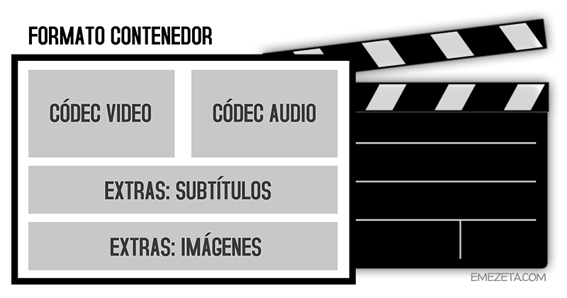

Etiquetas multimedia¶
Etiquetas HTML de imágenes¶
Antes de colocar una imagen en una página web debemos tener claro en que clasificación se encuentra. Las imágenes utilizadas en una página web pueden ser de dos tipos: de contenido o de decoración. En el primer caso, si la imagen pertenece al contenido y tema tratado en esa página, debería incluirse mediante una etiqueta HTML <img>, pero si por el contrario pertenece a la decoración de la página, deberíamos incluirla como un fondo mediante la propiedad CSS background-image.
Etiquetas para imágenes¶
Para incluir imágenes en el contenido de una página utilizaremos la etiqueta <img>, que es una etiqueta muy sencilla, que dispone de varios atributos para modificar como se verá la imagen (los atributos src y alt son siempre obligatorios):
| Atributo | Descripción |
|---|---|
src |
Indica el nombre o la URL de la imagen a mostrar. Atributo obligatorio. |
alt |
Establece un texto alternativo que describa la imagen a mostrar. Atributo obligatorio. |
width |
Indica el ancho de la imagen. No se debe indicar unidad. Se aconseja hacerlo desde CSS. |
height |
Indica el alto de la imagen. No se debe indicar unidad. Se aconseja hacerlo desde CSS. |
Un ejemplo básico para colocar una imagen sería el siguiente:
<img src="https://lenguajehtml.com/img/logo.png"
alt="Logotipo de HTML5"
width="400" height="453" />
Nota que los atributos width y height redimensionan la imagen al vuelo, esto es, la imagen tendrá unas dimensiones concretas y se descargará siempre a máxima resolución. Con estos atributos redimensionas la imagen al tamaño de ancho y alto indicado, pero la imagen realmente tiene su propio tamaño. Puedes omitir estos atributos siempre que quieras, ya que no son obligatorios, pero se consideran una buena práctica para evitar los molestos cambios repentinos de posición o tamaño en una página.
Formatos de imágenes¶
En el ámbito informático existen múltiples formatos de imágenes (¡muchísimos!) pero no todos son aptos para utilizar en web. Vamos a dar un repaso a los formatos más utilizados y cuales son más apropiados:
| Formato | Características | ¿Se recomienda? |
|---|---|---|
| PNG | Soporta transparencia. Compresión sin pérdidas. Imágenes «lisas». | Sí |
| JPG | Compresión con pérdidas. Ideal para imágenes con texturas. | Sí |
| SVG | Formato vectorial. Ideal para imágenes escalables. | Sí |
| GIF | Formato para imágenes pequeñas y animadas. | Sí, pero evitar. |
| WEBP | Alternativa libre de Google al JPEG. Soporta transparencias. | Con precaución |
| JPEG2000 | Evolución del JPEG. | No, poco soporte |
| JPEG-XR | Alternativa libre de Microsoft al JPEG. | No, poco soporte |
| APNG | Alternativa libre a GIF. Compatible con PNG. Soporta animaciones. | Con precaución |
| AVIF | Formato de imagen basado en AV1. No confundir con videos AVI. | No, poco soporte |
Cualquier otro formato no mostrado en esta lista no está recomendado para utilizar en web. Formatos como BMP, TIFF, RAW, NEF, PSD, CDR son formatos muy pesados, propietarios o no orientados para su uso en la web.
!!! Si quieres saber más sobre formatos de imágenes y como conseguir reducir su tamaño sin disminuir su calidad, te sugiero leer Formatos de imagen: Guía de optimización.
Nuevas etiquetas de imágenes¶
HTML 5.1 incorporará un nuevo sistema para utilizar imágenes en nuestros documentos HTML de forma mucho más flexible que la antigua etiqueta <img> que nos permitirá mostrar imágenes dependiendo de nuestras necesidades. Para ello, utilizaremos las dos siguientes etiquetas:
| Etiqueta | Atributos | Descripción |
|---|---|---|
<picture> |
Agrupa una serie de imágenes. Etiqueta contenedora. | |
<source> |
srcset, sizes, media, typeMostrará la imagen que cumpla una serie de criterios opcionales. |
Como podemos ver, lo interesante está en la etiqueta <source>, que tiene una serie de atributos disponibles para utilizar. Vamos a ver para que sirve cada uno:
| Atributo | Descripción |
|---|---|
srcset |
Serie de imágenes (separadas por coma) que se utilizarán. Atributo obligatorio. |
sizes |
Tamaño específico de la imagen que finalmente se mostrará. |
media |
Condición que se debe cumplir para que muestre la imagen. Ver media queries. |
type |
Tipo de formato de imagen. Opcional. |
Imágenes alternativas¶
Una de las primeras ventajas que nos ofrecen estas etiquetas es la de utilizar formatos diferentes, dependiendo del soporte del navegador. Así pues, podríamos hacer algo como esto:
<picture>
<source srcset="imagen.webp" />
<!-- Formato WebP -->
<source srcset="imagen.jxr" />
<!-- Formato JPEG XR -->
<img src="imagen.jpg" alt="Descripción de la imagen" />
<!-- Fallback -->
</picture>
En este caso, indicamos que el navegador utilice la imagen con el formato WebP. En caso de no soportarlo, lo intentará con el formato JPEG XR. Si tampoco lo soporta, mostrará la imagen en formato JPEG, que es la que está soportada por todos los navegadores, y si utilizamos algún navegador de texto como Lynx u otro que no pueda mostrar imágenes, mostrará el texto alternativo.
Imágenes responsive¶
Otra ventaja interesante es que con <picture> podemos crear imágenes responsive que cambien dependiendo de características de las media queries (CSS). Por ejemplo, utilicemos min-width (tamaño mínimo de ancho de la pantalla) en el siguiente ejemplo:
<picture>
<source media="(min-width: 600px)"
srcset="html5-logo-xl.png" />
<source media="(min-width: 300px) and (max-width: 600px)"
srcset="html5-logo-large.png" />
<source media="(max-width: 50px)"
srcset="html5-logo-small.png" />
<img src="html5-logo-medium.png" alt="HTML5 logo" />
</picture>
De esta forma, estamos indicando que se muestren diferentes imágenes dependiendo de la resolución de pantalla (ancho) del dispositivo:
- Dispositivos muy grandes (más de 600px): Muestra la imagen
html5-logo-xl.png - Dispositivos grandes (entre 300-600px): Muestra la imagen
html5-logo-large.png - Dispositivos pequeños (menos de 50px): Muestra la imagen
html5-logo-small.png - Si no cumple las anteriores (o no soporta HTML5.1): Muestra la imagen
html5-logo-medium.png
Nótese que esto sólo hará cambio de imagen efectivo justo en los límites indicados (50, 300, 600). Si se desea que la imagen se adapte proporcionalmente, lo mejor es recurrir a tamaños máximos y mínimos de CSS.
Diferentes densidades¶
Además, este sistema también permite especificar diferentes imágenes dependiendo de la densidad de pantalla del dispositivo (alto que varía actualmente en las diferentes gamas de smartphones). Para ello, tenemos que usar un descriptor después del nombre de la imagen utilizado en el atributo srcset (si no se incluye, por omisión es igual a 1x):
<picture>
<source media="(min-width: 600px)"
srcset="html5-logo-xl.png, html5-logo-xl-hd.png 2x, html5-logo-xl-fhd.png 3x" />
<source media="(min-width: 300px) and (max-width: 600px)"
srcset="html5-logo-large.png, html5-logo-large-hd.png 2x, html5-logo-large-fhd.png 3x" />
<source media="(max-width: 50px)"
srcset="html5-logo-small.png, html5-logo-small-hd.png 2x, html5-logo-small-fhd.png 3x" />
<img srcset="html5-logo-medium.png, html5-logo-medium-hd.png 2x, html5-logo-medium-fhd.png 3x"
alt="HTML5 logo" />
</picture>
Nótese que en cada etiqueta <source>, e incluso en la etiqueta <img>, se puede especificar el atributo srcset e indicar varias imágenes preparadas para pantallas de alta densidad.
Por último, recuerda que la etiqueta <picture> y la etiqueta <source> dentro de la anterior son características de HTML5.1 y aún no están soportadas en todos los navegadores. Se recomienda ser cuidadoso con este detalle.
Etiquetas de contenido externo¶
Cuando tenemos una página web y queremos colocar contenido en ella, lo conveniente es utilizar formatos libres para garantizar que sean accesibles desde cualquier tipo de dispositivo.
¿Pero que ocurre si lo que quiero colocar no son formatos de video, de audio o de imagen? Por ejemplo, servicios como Youtube, Vimeo, SoundCloud, SlideShare u otros similares. Se trata de servicios que ofrecen contenido externo para incrustar en nuestra página, pero no nos proporcionan directamente imágenes, video o audio en formatos que reconozca el navegador, sino que nos ofrecen un enlace o contenidos que requieren un plugin externo instalado en el navegador. En esas situaciones, lo más probable es que necesites una de las siguientes etiquetas.
Contenido externo¶
Las siguientes etiquetas sirven para incrustar contenido externo:
| Etiqueta | Atributos | Descripción |
|---|---|---|
<iframe> |
src, srcdoc, name, width, height |
Permite incrustar contenido externo en «vivo». |
<embed> |
src, type, width, height |
Permite incrustar contenido interactivo. |
<object> |
data, type, name, form, width, height |
Permite incrustar contenido externo con fallbacks. |
<param> |
name, value |
Define parámetros de un elemento <object>. |
Veamos ejemplos de cada una de ellas en los siguientes apartados.
Marcos en línea (iframes)¶
Antiguamente, en versiones anteriores de HTML, existieron unas etiquetas llamadas marcos, mediante las cuales se permitía dividir la pantalla en varias secciones. Actualmente, ese modo de desarrollo ya no se utiliza ya que acarreaba múltiples problemas de accesibilidad, posicionamiento, etc.
Sin embargo, de toda la familia de etiquetas de marcos, han sobrevivido los <iframe>, que siguen siendo útiles para incrustar contenido externo. Veamos un ejemplo extraído de servicios como YouTube o SoundCloud:
<iframe src="https://www.youtube.com/embed/Imeq3GeRttw" width="560" height="315">
</iframe>
<a href="http://www.bing.com/" target="marco">Abrir buscador Bing</a>
<iframe name="marco" width="100%" height="450"
src="https://w.soundcloud.com/player/?url=https%3A//api.soundcloud.com/tracks/38289724&visual=true">
</iframe>
Esta etiqueta permite incrustar contenido externo anidado en nuestro propio documento. Es decir, podemos crear un recuadro que en su interior va a tener otra dirección URL de otra página web, documento o recurso que queramos cargar en él. Generalmente, es la etiqueta más utilizada para todo tipo de contenido externo.
También podemos utilizar el atributo name para darle un nombre al marco y cargar direcciones URL diferentes a través de una etiqueta <a>, haciendo referencia al marco a través del atributo target. Por su parte, el atributo srcdoc nos permite indicar directamente el código fuente del iframe en su valor:
<iframe src="http://pagina.com/apartado/" srcdoc="<p>¡Hola! ¡Soy el <strong>texto del iframe</strong>!</p>"></iframe>
Como se puede ver, se puede indicar el atributo srcdoc y el atributo src a la misma vez, dando prioridad al atributo srcdoc y manteniendo el atributo src como fallback, para navegadores que no soporten srcdoc.
Contenido incrustado¶
La etiqueta <embed> se ideó antiguamente como una etiqueta no estándar para incluir contenido que requería el uso de un plugin externo para funcionar, ya que se trataba de tecnologías propietarias y los navegadores no las soportan. La etiqueta fue retirada en HTML4, pero en HTML5 fue incluída de nuevo. Se puede utilizar, por ejemplo, para incrustar contenido flash en una página web:
<embed src="catgame.swf" width="400" height="250" />
Tradicionalmente, también se empezó a utilizar la etiqueta <object> para incrustar contenido flash, pudiendo especificar parámetros en su interior. El siguiente fragmento de código es equivalente al anterior:
<object data="catgame.swf">
<param name="quality" value="high" />
</object>
Así pues, la etiqueta <object> se ofrecía como una alternativa más apropiada para cargar todo tipo de contenidos. Y no sólo eso, sino que ofrece la posibilidad de especificar el tipo de formato del que se trata, así como añadir múltiples parámetros o la opción de añadir en su interior etiquetas HTML o texto que funcionen a modo de fallback (plan B), o lo que es lo mismo, en el caso de que el navegador no pueda cargar ese formato, cargará la imagen, video, texto o la etiqueta que se incluya en su interior. Algunos ejemplos:
<object data="clock.html"></object>
<object type="application/x-shockwave-flash">
<param name="movie" value="http://video.example.com/library/watch.swf" />
<param name="allowfullscreen" value="true" />
<param name="flashvars" value="http://video.example.com/vids/315981" />
Contenido multimedia no soportado.
</object>
Etiquetas HTML de video¶
En HTML5 se introduce la interesante posibilidad de mostrar videos directamente desde nuestro navegador. De hecho, si arrastramos un video a la ventana del navegador, veremos que comienza a reproducirse en él. Para poder insertar videos en nuestras páginas HTML tenemos que utilizar la etiqueta <video>, que junto a la etiqueta <source> podremos utilizar estas capacidades multimedia de HTML5.
Ojo
Si lo que quieres es insertar videos desde Youtube, Vimeo u otro servicio alternativa, debes utilizar la etiqueta HTML iframe en lugar de la etiqueta <video>.
Video (modo básico)¶
La etiqueta <video> tiene varios atributos a nuestra disposición:
| Atributo | Valor | Descripción |
|---|---|---|
src |
Dirección URL | Video a reproducir. Obligatoria si actua como etiqueta contenedora. |
poster |
Dirección URL | Muestra una imagen a modo de presentación. |
preload |
auto | metadata | none |
Indica como realizar la precarga del video. |
mediagroup |
nombre | Establece un nombre para un grupo de contenidos multimedia. |
autoplay |
Boolean | Comienza a reproducir el video automáticamente. |
loop |
Boolean | Vuelve a iniciar el video cuando finaliza su reproducción (bucle). |
muted |
Boolean | Establece el video sin sonido (silenciado). |
controls |
Boolean | Muestra los controles de reproducción. Por defecto no se muestran. |
width |
tamaño | Indica el tamaño de ancho del video. |
height |
tamaño | Indica el tamaño de alto del video. |
Un primer ejemplo muy básico para colocar un video en nuestra página web:
<video src="video.mp4" width="640" height="480"></video>
Sin embargo, esto mostrará el primer fotograma del video, con un tamaño de 640x480, pero se verá como una imagen, ya que no muestra los controles del video y tampoco tiene la autoreproducción activada. Podríamos solucionarlo indicando los atributos controls o autoplay.
Otro ejemplos básicos para colocar videos en nuestra página:
<!-- Ejemplo 1 -->
<video src="video.webm" poster="presentacion.jpg" controls></video>
<!-- Ejemplo 2 -->
<video src="video.mp4" autoplay muted loop></video>
En este caso cargamos un video, pero que no se mostrará porque se ha indicado que se utilice una imagen de presentación que se mostrará hasta que el usuario pulse en el botón de reproducir de los controles. En el segundo ejemplo, tenemos un video que se reproduce automáticamente al cargar la página, en silencio y en bucle, iniciándose una y otra vez.
Formatos de video¶
Antes de continuar con el modo avanzado de etiquetas de video, debemos conocer una serie de conceptos básicos y los diferentes formatos de video que existen actualmente. En primer lugar, debemos saber que un archivo de video tiene dos partes principales: el formato contenedor, que es el formato del video en sí, mientras que en su interior puede tener múltiples componentes codificados con diferentes codecs.

De hecho, un video básico suele tener, como mínimo, un componente de video y otro de audio, pero puede tener muchos más (subtítulos, imágenes, etc...). Estos detalles son muy importantes, ya que dependiendo del formato y/o codec de un video, puede que sea factible utilizarlo para web o no, así que hay que conocer un poco sobre estos conceptos.
A continuación tenemos un listado de los formatos/codecs más conocidos y utilizados:
| Formato | Codec utilizado | Características | ¿Recomendado? |
|---|---|---|---|
| MP4 | x264, DivX H264 | Alta calidad. Codec x264 libre. | Sí, buen soporte |
| WebM | VP8, VP9 | Alternativa libre a MP4 de Google. | Sí, soporte medio |
| AV1 | Basado en VP10, Daala y Thor | Compite con HEVC/H.265 | No, soporte bajo |
| HEVC | x265, DivX HEVC | Futura evolución de MP4. | No, poco soporte |
| OGV | Theora | Alternativa libre a MP4. | Con precaución |
| MKV | Matroska | Buena compresión. Potente. | No, alto consumo CPU |
| AVI | XviD, DivX ⅗ | Menor compresión que MP4. | No, anticuado |
Otros formatos como MOV, FLV, 3GP, MPG, RMVB o ASF/WMV no se recomiendan para su utilización en web ya que son anticuados, propietarios o poco eficientes. Si te interesa saber más sobre estos temas, aconsejo la lectura del artículo Formatos de video: Todo lo que deberías saber.
Video (modo avanzado)¶
Sin embargo, aún con toda esta información, no hemos visto ni la mitad de posibilidades multimedia que tenemos con HTML5. La etiqueta <video> también puede actuar como etiqueta contenedora e incluir varias etiquetas HTML para dotar de mayor compatibilidad, o capacidades adicionales.
| Etiqueta | Atributos | Descripción |
|---|---|---|
<source> |
src, type |
Establece un archivo de video o lo añade como alternativa. |
<track> |
src, srclang, label, kind, default |
Establece un archivo de subtítulos o lo añade como alternativa. |
Videos alternativos¶
Si utilizamos la etiqueta <video> como etiqueta contenedora, podemos incluir etiquetas <source> en su interior para proporcionar formatos alternativos y tener mayor compatibilidad con otros navegadores y navegadores antiguos que no soporten HTML5:
<video width="640" height="480">
<source src="video.mp4" type="video/mp4" />
<source src="video.webm" type="video/webm" />
<source src="video.ogv" type="video/ogg" />
<img src="imagen.png" alt="Video no soportado" />
Su navegador no soporta contenido multimedia.
</video>
En este ejemplo, los navegadores no mostrarán todos los contenidos a la vez, sino que seguirán el siguiente procedimiento:
- Intenta mostrar el primer formato (MP4). Si el navegador no soporta este formato, salta al siguiente.
- Intenta mostrar el segundo formato (WEBM). Si el navegador no soporta este formato, salta al siguiente.
- Intenta mostrar el tercer formato (OGV). Si el navegador no soporta este formato, salta al siguiente.
- Si se trata de un navegador que no soporta HTML5, intentará mostrar la imagen.
- Si se trata de un navegador de terminal de texto (o sin capacidades gráficas), mostrará el texto "Su navegador no soporta contenido multimedia".
De esta forma tenemos soporte completo para todo tipo de dispositivos.
Acceso a segundos concretos¶
Utilizando los fragmentos multimedia se pueden conseguir algunas acciones interesantes, como por ejemplo especificar el momento concreto del video (o audio) en el que se quiere empezar a reproducir o terminar de reproducir. Veamos unos ejemplos:
<!-- Ejemplo 1 -->
<video autoplay controls src="video.mp4#t=15"></video>
<!-- Ejemplo 2 -->
<video autoplay controls src="video.mp4#t=25,45"></video>
En el primer caso, reproducimos el video a partir del segundo 15 del mismo, mientras que en el segundo caso, reproducimos el video a partir del segundo 25 y terminará de reproducirse en el segundo 45.
Etiquetas HTML de audio¶
Al igual que vimos en el tema anterior con los videos, es posible añadir archivos de audio a nuestras páginas web para colocar música, sonidos o simplemente usar música como ambientación. En versiones anteriores de HTML se usaba una etiqueta HTML obsoleta denominada <bgsound> que realizaba algo similar.
En este caso, utilizaremos la etiqueta <audio> que funciona exactamente igual que <video>, pero con relación a archivos de audio.
Audio (modo básico)¶
La etiqueta <audio> tiene varios atributos a nuestra disposición:
| Atributo | Valor | Descripción |
|---|---|---|
src |
Dirección URL | Audio a reproducir. Obligatoria si actua como etiqueta contenedora. |
preload |
auto | metadata | none |
Indica como realizar la precarga del audio. |
mediagroup |
nombre | Establece un nombre para un grupo de contenidos multimedia. |
autoplay |
Boolean | Comienza a reproducir el audio automáticamente. |
loop |
Boolean | Vuelve a iniciar el audio cuando finaliza su reproducción (bucle). |
muted |
Boolean | Establece el audio sin sonido (silenciado). |
controls |
Boolean | Muestra los controles de reproducción. Por defecto no se muestran. |
Un primer ejemplo muy básico para colocar un audio en nuestra página web:
<audio src="audio.mp3"></audio>
Sin embargo esto no mostrará nada visualmente, ni reproducirá ningún sonido. Realmente, el audio está ahí, pero no le hemos indicado el atributo controls para que muestre los controles y que el usuario pueda pulsar el botón «play». Tampoco le hemos colocado el atributo autoplay, en cuyo caso tampoco mostraría nada visualmente, pero si que se empezaría a escuchar el sonido o pista de música.
Otro ejemplos básicos para colocar audios en nuestra página:
<audio src="audio.mp3" preload="none" controls></audio>
<audio src="audio.ogg" autoplay loop></audio>
En el primer ejemplo, cargamos un audio en formato MP3, pero indicamos que no precargue nada. Empezará a descargarse sólo cuando el usuario pulse en los controles de reproducción. Este escenario puede ser interesante para evitar consumo de ancho de banda de archivos que es probable que el usuario no escuche o en dispositivos móviles donde las tarifas de datos son costosas.
Por otro lado, el segundo ejemplo, carga un archivo de audio en formato OGG y lo reproduce automáticamente y en bucle, de modo que vuelve a empezar cuando termina.
!!!OJO:
Los navegadores han cambiado la política de autoreproducción con autoplay. Para evitar el uso abusivo de audio en una página sin permiso del usuario, los navegadores exigen que el usuario haya interactuado con la página con anterioridad (y posterior a la carga inicial). Lo aconsejable sería utilizar botones o areas pulsables para activar el sonido mediante JS.
Formatos de audio¶
Los archivos de audio estan codificados mediante un codec específico, y es importante conocer estos detalles para saber que formatos están soportados por los diferentes navegadores.
A continuación tenemos un listado de los formatos/codecs de audio más conocidos y utilizados:
| Formato | Codec utilizado | Características | ¿Recomendado? |
|---|---|---|---|
| MP3 | MPEG Layer-3 | Buena calidad. | Sí, buen soporte |
| AAC | Advanced Audio Coding | Mejora el MP3. Usado como audio en MP4. | Sí, buen soporte |
| OGG | Ogg Vorbis | Buena calidad. Alternativa libre a MP3. | Sí, soporte medio |
| Opus | Opus | Buena calidad. Alternativa libre a MP3. | Sí, soporte medio |
| FLAC | FLAC Audio Lossless | Compresión sin pérdidas. Alto tamaño. | Sí, buen soporte. |
| WAV | Wave sound | Formato de Microsoft. Está soportado. | No, muy pesado |
Otros formatos como ASF/WMA, RA u otros no son apropiados para web. Si te interesa saber más sobre estos temas, aconsejo la lectura del artículo Formatos de audio: Todo lo que deberías saber.
Audio (modo avanzado)¶
La etiqueta <audio> también puede actuar como etiqueta contenedora e incluir varias etiquetas HTML para dotar de mayor compatibilidad, o capacidades adicionales.
| Etiqueta | Atributos | Descripción |
|---|---|---|
<source> |
src, type |
Establece un archivo de audio o lo añade como alternativa. |
<track> |
src, srclang, label, kind, default |
Establece un archivo de subtítulos o lo añade como alternativa. |
De esta forma, pasamos de un esquema donde solo usabamos una etiqueta <audio> a otro un poco más avanzado, donde <audio> contiene múltiples etiquetas que actúan sobre ese audio en cuestión. Dichas etiquetas pueden ser <source> o <track>:
<audio>
<!-- Aquí etiquetas para añadir funcionalidad extra -->
</audio>
La etiqueta de subtítulos <track> la veremos un poco más adelante, en el capítulo de etiquetas HTML de subtítulos.
Audio alternativo (fallback)¶
Si utilizamos la etiqueta <audio> como etiqueta contenedora, podemos incluir etiquetas <source> en su interior para proporcionar formatos alternativos y tener mayor compatibilidad con otros navegadores y navegadores antiguos que no soporten HTML5:
<audio>
<source src="audio.opus" />
<source src="audio.ogg" />
<source src="audio.mp3" />
</audio>
En este ejemplo, el navegador intentará reproducir el archivo de audio en formato Opus, en caso de no estar soportado por el navegador, intentará reproducir el formato Ogg Vorbis, y en caso de tampoco soportarlo, reproducirá el formato MP3.
Etiquetas HTML de subtitulos¶
Con la llegada de HTML5 se introduce WebVTT, un formato abierto orientado a utilizarse en web para la creación de subtítulos, que proviene del extendido formato SRT.
Formato WebVTT¶
La sintaxis del formato de texto WebVTT es bastante legible:
WEBVTT
00:04.000 --> 00:07.000
<v Capitán América>Hola <i>Tony</i>.
00:09.000 --> 00:11.000
<v Ironman>¿Me echabas de menos?
00:12.000 --> 00:14.000 align:end size:50%
*ruido*
Como se puede ver, el archivo empieza con el texto WEBVTT y continua con una línea que indica el inicio y final que permanecerá visible la frase de la siguiente línea. En la frase, se puede indicar el personaje que está hablando (para posteriormente aplicar estilos) e incluso incluir etiquetas simples para dar formato al texto. También se pueden alinear textos, modificar su tamaño o cambiar la posición, entre otras cosas.
Etiquetas para subtítulos¶
Este formato se puede utilizar mediante la etiqueta <track> dentro de una etiqueta contenedora <video> y después de las etiquetas <source>. La etiqueta <track> soporta varios atributos:
| Atributo | Valor | Descripción |
|---|---|---|
src |
Dirección URL | Archivo o ruta del archivo de subtítulos WebVTT. Atributo obligatorio. |
srclang |
idioma | Código ISO 639-1 del idioma de los subtítulos. |
label |
nombre | Título que verá el usuario para elegir el canal de subtítulos. |
kind |
subtitles | captions - descriptions - chapters | metadata |
Indica el tipo o género de subtítulos enlazados. |
default |
Boolean | Utiliza este canal de subtítulos por defecto. |
En el siguiente fragmento de código vemos un ejemplo de uso, en el cuál, en la barra de los controles de reproducción, se nos mostrará un icono CC donde el usuario puede elegir uno de los canales de subtítulos indicados, que por defecto utiliza el primero que encuentra o el que tenga el atributo default:
<video controls>
<source src="video.mp4" />
<source src="video.webm" />
<track src="subs-es.vtt" srclang="es" label="Español" default />
<track src="subs-en.vtt" srclang="en" label="English" />
<track src="subs-fr.vtt" srclang="fr" label="Français" />
</video>
De la misma forma también es posible utilizar subtítulos en etiquetas <audio> contenedoras, algo que puede ser muy útil por ejemplo para podcasts o reproducciones de audio donde se cuentan detalles y se quiere subtitular o describir de forma textual.
Fuente: Lenguaje de Html por Manz